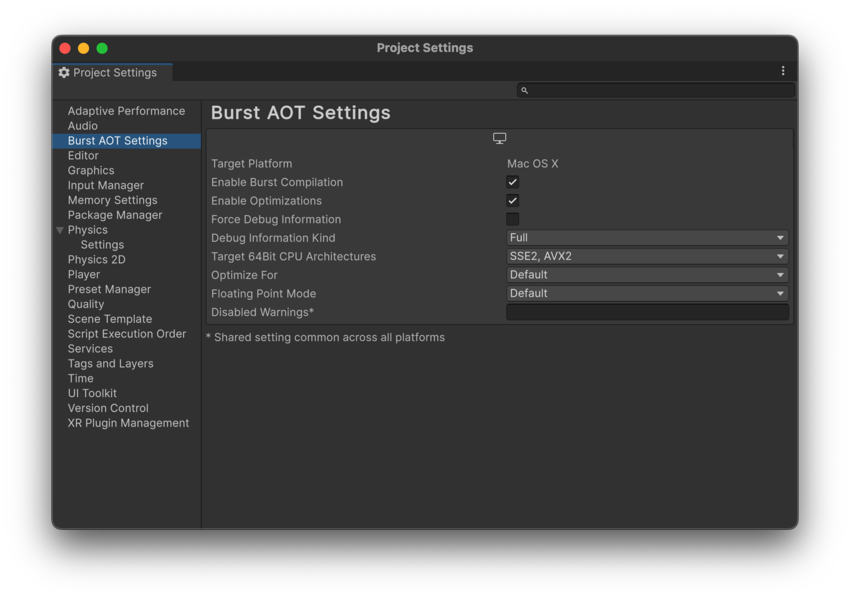

To control Burst’s AOT compilation, use the Burst AOT Settings section of the Project Settings window (Edit > Project Settings > Burst AOT Settings). These settings control Burst compilation in Player builds only. To configure Burst compilation in the Unity Editor, refer to Burst menu reference.

| Setting | Function |
|---|---|
| Target Platform | Displays the current platform. To change the platform, go to File > Build Profiles. You can define different Burst AOT settings for each platform. |
| Enable Burst Compilation | Enable this setting to turn Burst compilation on. Disable this setting to deactivate Burst compilation for the selected platform. |
| Enable Optimizations | Enable this setting to activate Burst optimizations. |
| Force Debug Information | Enable this setting to make Burst generate debug information. This adds debug symbols to your project, even in release builds of your project, so that when you load it in a debugger you can see file and line information. |
|
Target 32Bit CPU Architectures (Displayed if the architecture is supported) |
Select the CPU architectures that you want to use for 32 bit builds. By default, SSE2 and SSE4 are selected. |
|
Target 64Bit CPU Architectures (Displayed if the architecture is supported) |
Select the CPU architectures that you want to use for 64-bit builds. By default, SSE2 and SSE4 are selected. |
|
Target Arm 64Bit CPU Architectures (Displayed if the architecture is supported) |
Select the CPU architectures that you want to use for Arm 64-bit builds. By default, ARMV8A is selected. |
| Optimize For | Select which optimization settings to compile Burst code for. The options are as follows:
OptimizeFor setting is the global default optimization setting for any Burst job or function-pointer. If any assembly level BurstCompile, or a specific Burst job or function-pointer has an OptimizeFor setting, it overrides the global optimization setting for those jobs. For more information, refer to OptimizeFor. |
| Floating Point Mode | Select the default floating point mode to use for Burst compiled code. This may be overridden by specifying the FloatMode field for BurstCompile attribute or a job. For more information, refer to FloatMode. |
| Disabled Warnings | Specify a semi-colon separated list of Burst warning numbers to disable the warnings for a player build. Unity shares this setting across all platforms. This can be useful if you want to ignore specific compilation warnings while testing your application. |
|
Stack Protector (Displayed if the architecture is supported) |
Specifies the stack protector level. Functions with stack protectors have an extra value added to the stack frame, which is verified on the function’s return to help detect potential buffer overflow and prevent exploitation. The options are as follows:
|
|
Stack Protector Buffer Size (Displayed if the architecture is supported) |
Specifies the threshold value used by the different Stack Protector options to determine if a function is considered vulnerable and to guide layout of the arrays and structures on the stack. |
| CPU Architecture | This setting is only supported for Windows, macOS, Linux and Android. Unity builds a Player that supports the CPU architectures you’ve selected. Burst generates a special dispatch into the module, so that the code generated detects the CPU the target platform uses and selects the appropriate CPU architecture at runtime. |